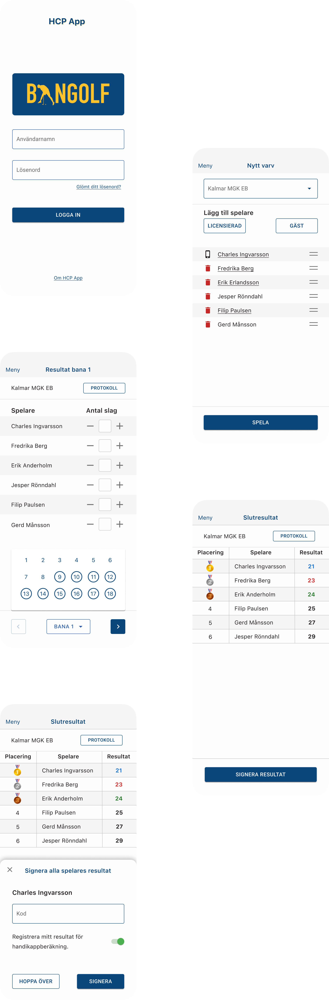

Svenska Bangolfförbundet
The Swedish Miniature Golf Association asked for an app that registered players can use to keep track on their individual playing history, handicap and as an alternative to use instead of pen and paper while playing practice rounds.
